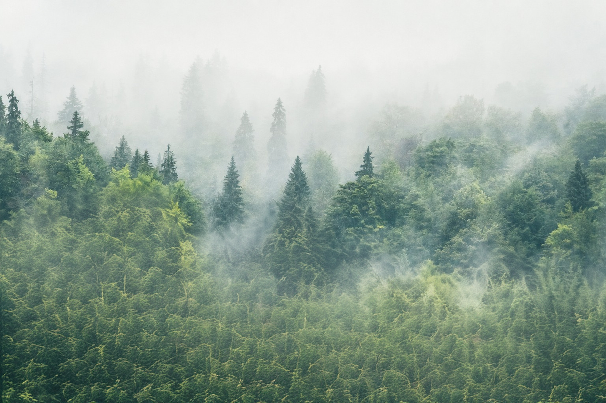
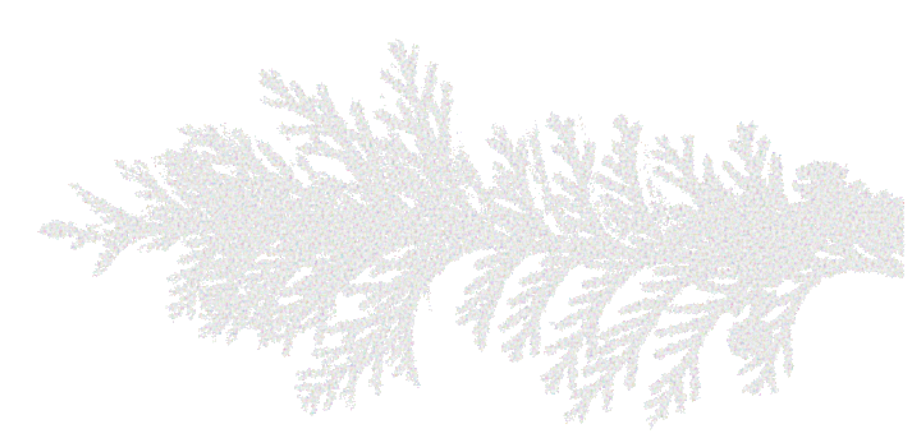

scroll
본 전시는 희녹이 바라보는 편백의 순환 가치를 바탕으로, 자연 원료가 수집되고 추출되어 제품으로 활용된 뒤
다시 자연으로 환원되는 흐름을 감각적으로 풀어낸 인터랙티브 전시입니다.
관람자는 빛, 소리, 촉감, 향, 흙의 감각을 따라 이동하며 편백 숲의 순환 과정을 추상적으로 경험합니다.
다시 자연으로 환원되는 흐름을 감각적으로 풀어낸 인터랙티브 전시입니다.
관람자는 빛, 소리, 촉감, 향, 흙의 감각을 따라 이동하며 편백 숲의 순환 과정을 추상적으로 경험합니다.

Pruning
Extraction
Sensation
Circulation
전시는 편백의 생애를 직선적인 생산 과정이 아닌, 다시 숲으로 돌아가는 순환의 구조로 바라봅니다.
관람자는 각 인터랙션을 통해 편백이 지닌 향, 소리, 질감, 움직임을 감각하며 자연과 희녹, 그리고 환원의 관계를 경험합니다.
관람자는 각 인터랙션을 통해 편백이 지닌 향, 소리, 질감, 움직임을 감각하며 자연과 희녹, 그리고 환원의 관계를 경험합니다.

Exhibition Flow
Step into the Hinoki Forest
숲을 거닐며 자연의 생장을 위한 가지치기 이후
빛이 스며드는 순간을 경험합니다.
Echoes of the Nature
편백 잎을 만지고 겹쳐지는 자연의 소리와 감각을 느낍니다
Extracting Hinoki Water
숲의 끝에 있는 편백나무 밑동과 물의 파장을 통한 시각적 체험으로
편백수 추출과정을 관람해 보세요.
Return to Nature
바닥의 흙과 퇴비의 감각을 통해 편백이
다시 자연으로 돌아가는 흐름을 경험합니다.
숲을 이루는 요소들을 채집해 키트에 넣어 가져가셔도 좋습니다.